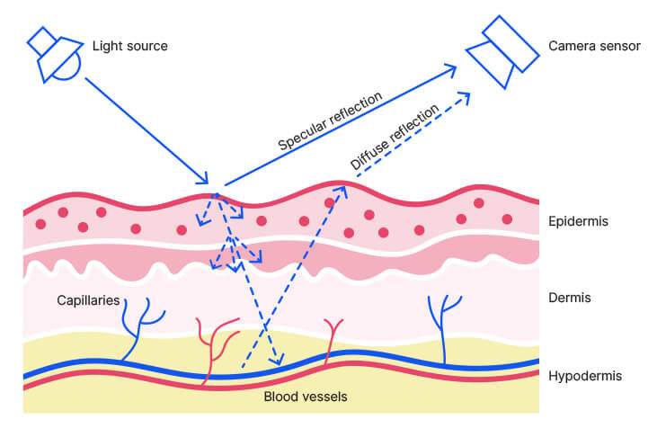

METHOD 01
Contactless video-based rPPG
For contactless data extraction, Vitalism.ai uses rPPG (remote photoplethysmographic imaging) — a camera-based solution for contactless cardiovascular monitoring, proven to be as accurate as traditional PPG devices. Our technology measures the changes in red, green and blue light reflected from the skin, and quantifies the contrast between specular reflection and diffused reflection.